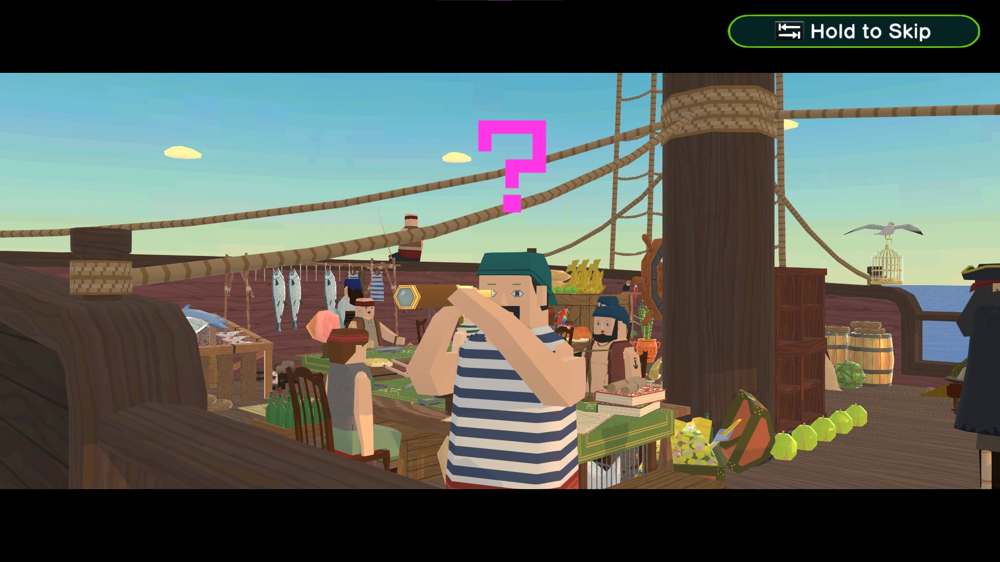
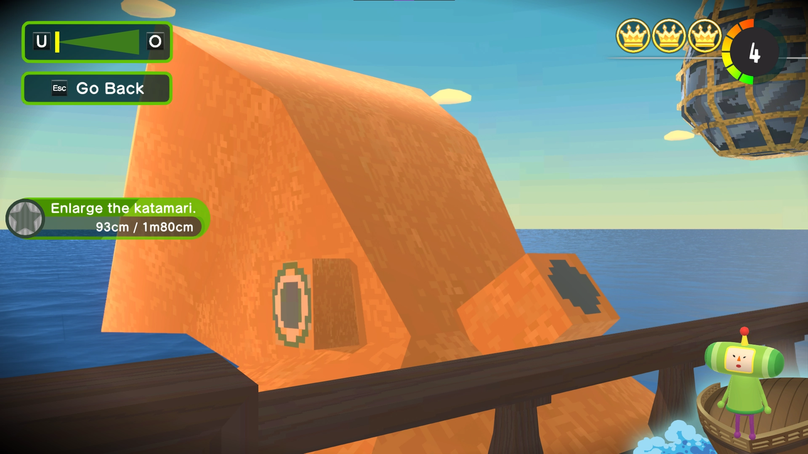
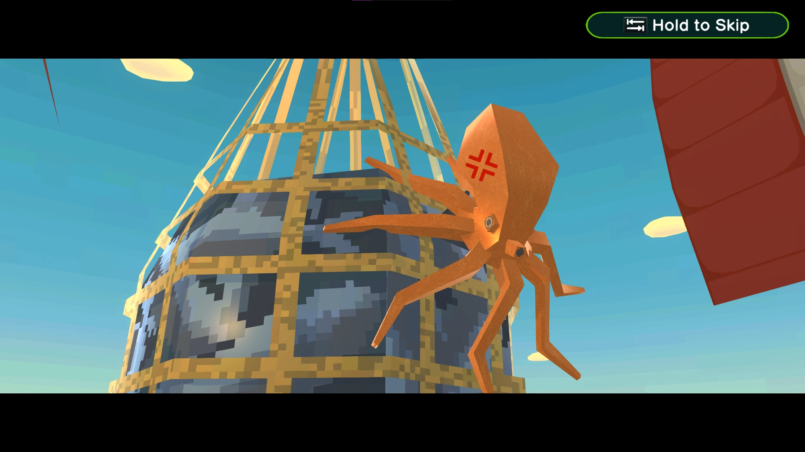
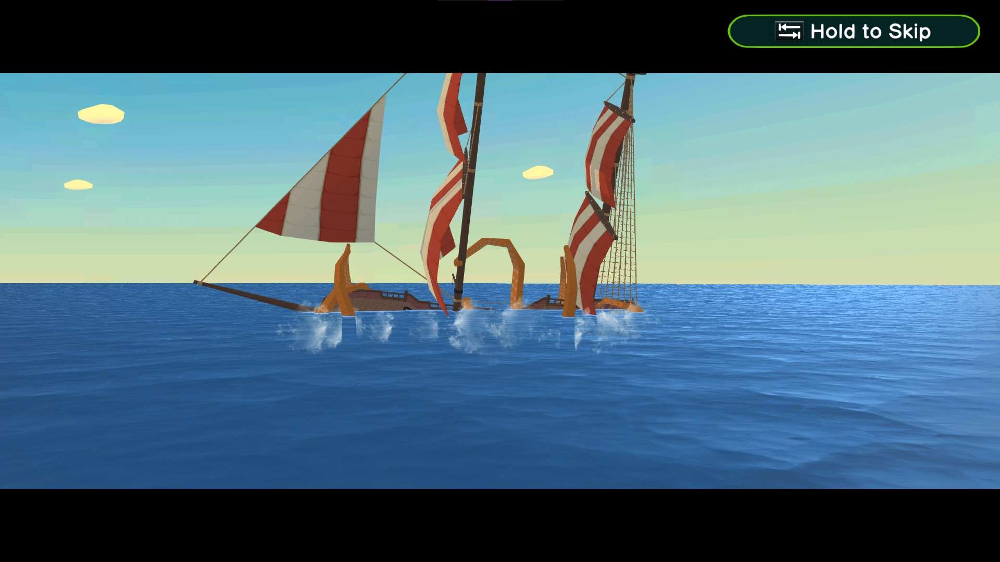
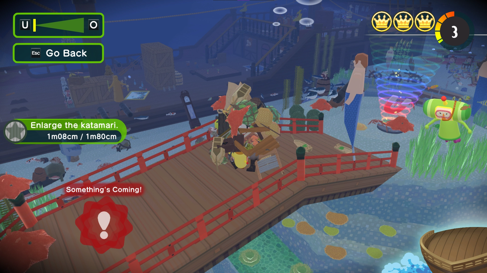
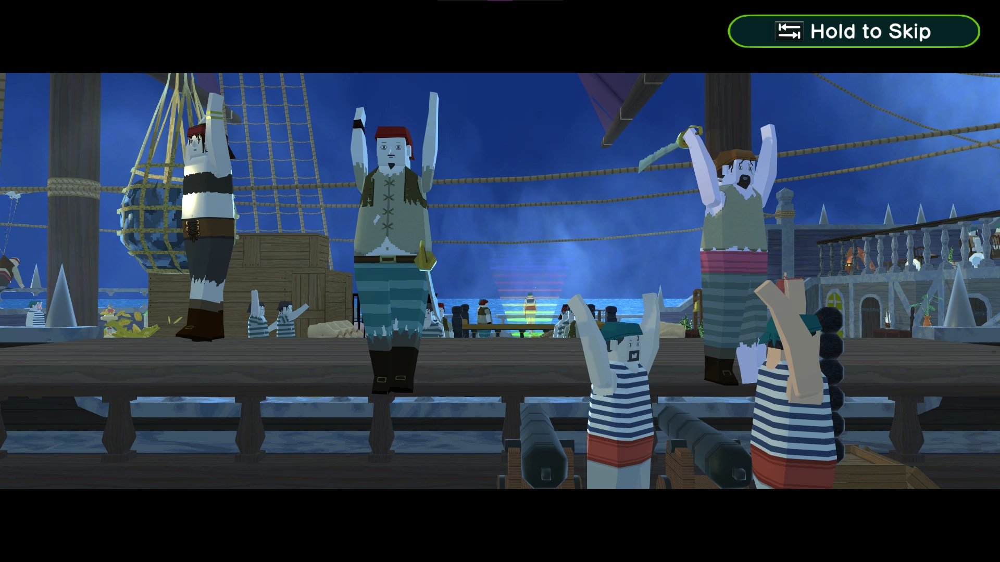
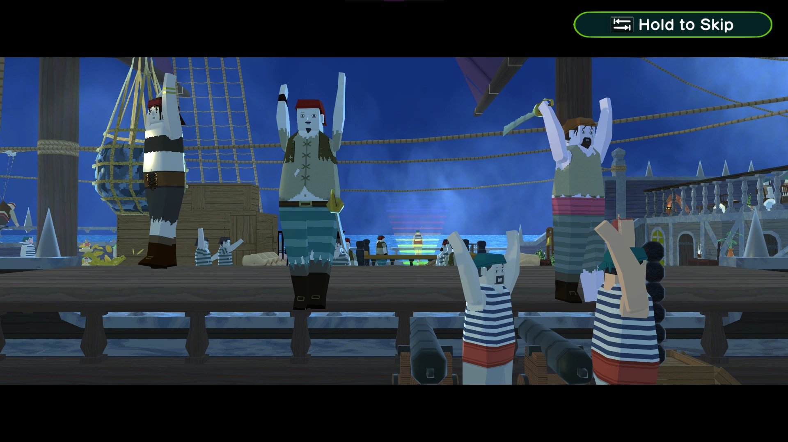
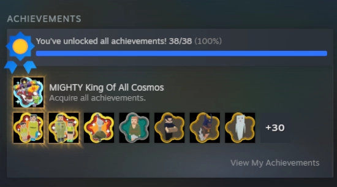

Once Upon a Time, there was a Katamari
Once Upon a Time, there was a Katamari

SPOILER WARNING !!
This blog entry contains spoilers to Once Upon a KATAMARI and perhaps even a few other Katamari games !
If you have yet to play the Katamari games, especially Once Upon a KATAMARI, and do not want to get spoilered, i'd recommend you'd not read this blog entry !
And please, play Katamari if you haven't done so yet ! You're really missing out !
Once upon a time, there was a game called Katamari Damacy. It was a game like no other. At a time, where the technology in video games got more and more advanced over the years, this game really stood out from the crowd of the ever growing video game market.
I mean, what games usually come to mind, when you think of the year 2004? GTA: San Andreas? Half-Life 2? They all mostly feature the same technical improvements. More realistic graphics, better sound and all that neat stuff compared to their previous entries ! Katamari Damacy is not one of those games.
Not only wasn't it a sequel to a well established and beloved video game franchise, but it also didn't feature any "realistic" graphics, most early- to mid 2000's games are known for. Katamari Damacy didn't need all of that. It simply stayed true to itself !
Created by japanese artist and video game developer Keita Takahashi and released on the 18th of March 2004 in Japan, this game quickly took the world by storm, especially after Katamari was presented for the first time outside of Japan at GDC in March of 2004 in the U.S, which in turn lead to a release in North America on Septmeber 21st 2004 !
In Katamari Damacy, you take control of the Prince, who's father, the King of all Cosmos, accidentily destroyed all the stars in the galaxy, after having one too many drinks. So the King tasks the Prince with rolling a sticky ball, called the katamari, on earth to roll up objects of all kinds to replace the stars in the night sky. It quickly found a huge fanbase.
Katamari Damacy had such a big impact, a playable demo of the game was even displayed in the Museum of Modern Art in Manhattan.
Fans all over the world loved Katamari Damacy's unique nature ! There just weren't that many games like it on the market at that time ! But with an average playtime of about 6 hours, this game could easily be finished in one evening and the fans cried out for more !
Namco heard the wishes of the fans, and plans were quickly set in motion to develop a sequel to Katamari Damacy, although series creator Keita Takahashi wasn't too fond of the idea of a "Katamari Damacy 2". After learning however, that Namco would continue to make Katamari games in the future even without his direct involvement in development, Takahashi decided to help develop the next release in the Katamari series, so fans wouldn't be disappointed if the next game turned out to be a flop.
And after what would become "We Love Katamari", which released for the PS2 in 2005, Takahashi went to work on other projects inside Namco, one of them being Noby Noby Boy, up until his departure from the company in 2009.
Namco (and later on Bandai Namco) however, wasn't done with Katamari. Far from it ! They continued to produce sequel after sequel, totally going against the wishes and vision of the series' creator ! Some of them turned out fine without Takahashi on board, others on the other hand... had their moments...?
After the release of "Touch my Katamari" for the PS Vita in 2012, the series went on an indefinite hiatus. Although there were remasters of the first two titles which released in 2018 and 2023 respectively, and even a few sad attempts to jump on the mobile game bandwagon in the 2010s, but other than that, it seemed like that Bandai Namco didn't have any plans to continue this series and that the ball had finally stopped rolling after all those years...
July 31st, 2025


Katamari Damacy is a game series i hold very near and dear to my heart ! Honestly, what more could you want in life, when you have a game where you roll a sticky ball all around the world, rolling up objects and getting bigger and bigger all the while listening not only to some sweet shibuya-kei tunes, but also the screams of every human on earth rolled into the ball, moments away from being condensed into a star in the cosmos?
It's one of few games i can always easily pick up and play after a long and exhausting day. So when i had a bad day, but there's still a little bit of energy left in my sad, empty little soul, i can just pop We Love Katamari into my PS2 and imediatly feel WAYYY better !
The smooth, relaxing and arcade-esqe gameplay, all the levels, where the developers switched up the original katamari concept with some really creative ideas, like rolling a sumo wrestler around town, rolling up foods and drinks to make him stronger or lighting a campfire with a burning katamari ! And let's not forget about the MUSIC. OH MY GOD THE MUSIC ! HAVE YOU EVER LISTENED TO THE KATAMARI SOUNDTRACK ?!
This isn't just a We Love Katamari-only trait, the Katamari series in general has a wonderful soundtrack ! I could go on about why i love Katamari Damacy, but we'd be here for the next few days...


When Once Upon A Katamari was announced earlier this year in the july nintendo direct, i screamed. Very loud. My neighbours probably thought my cat fucking had it with me and stabbed me in the chest with a kitchen knife. I'm talking about screams of joy, obviously ! It kind of reminded me of my reaction when the Paper Mario Thousand-Year Door remake was announced two years ago in september.
What i didn't know at that time is, that the trademark for this game had already been registered and made public all the way back in march of this year. And people were already talking about it ! I haven't heard anything about this ?!
The only thing i've heard of Katamari News this year, before the july Nintendo Direct, was that one Apple Arcade Katamari game, where the King turned into a popular twitch streamer. i- ...huh?
But generaly speaking, the Katamari series spans a wide array of great games !
In other words: I was soooo down for a new Katamari game, because i love Katamari ! No wait that's not right... WE love Katamari !...
[COMEDY GENIUS MILES NILTEN, EVERYBODY !] please clap now.

Anyways, i already knew from the beginning i had to get my hands on this game on release day ! The new premise of the game is, that you roll your Katamari in different parts of history and from the nintendo direct trailer the game looked pretty promising ! Despite the fact that the frame rate on switch resembled a literal flip book and that there was no switch 2 edition of this game. So i just opted to get the game on Steam, just to be safe.
But... rolling a Katamari throughout history? I'm all here for it !

The game starts in traditional Katamari Damacy fashion with a flashy, colourful and funky intro cutscene, set to this game's amazing title theme "Katamari Time!" ! Any Katamari game, which doesn't start this way simply isn't a katamari game, just to make this clear !
After choosing a save file (and adjusting the window size to fullscreen, if you are on pc lmao) you are thrown into a little introduction, talking about the king's past achivements and the current whereabouts of the royal family.
The game then throws you into a tutorial stage, where you help the King and the Queen clean up a room inside the royal estate with the help of your trusty old Katamari.
And if you know anything about the Katamari Damacy series, you may know that the controls have always been very funky ! I never really minded them, but for people who are strugling with Katamari's dual analog stick controls, the game let's you choose the control method between the original and a simpler control method, which is definitely a neat thing !
The tutorial stage also sets the tone really great with the song playing during the tutorial. I will go a bit deeper into Once Upon a Katamari's soundtrack a bit later on, but i just have to talk about this for a moment !
At the beginning of the tutorial stage you see the prince just standing aimlessly in the room, waiting for the king to finish his monolouge without any kind of music playing at that moment. But as soon as you get your hands on your katamari, the song "Katamari on the Doun" starts blasting in your ears.
It's energetic, it's pumped up ! It get's you motivated to roll a katamari !
And you're just sitting there, hearing that amazing song and you're just thinking to yourself: "Awww hell yeah ! Katamari is back, baby !" As if this song was chosen intentionally by the developers as some sort of welcome back message to old fans of katamari damacy, after the 14 year long hiatus of the series !
Somebody once told me the world is gonna ROLL me. I ain't the sharpest tool in the shed.
According to all known laws of aviation, there is no way a bee should be able to fly.
It's wings are too small to get it's fat little body off the ground.
The bee, of course, flies anyway because bees don't care what humans think is impossible. If you can read this, Miles fucked up the positioning of the image. Great Job, Miles !
OH GODDIE YES DADDY BANDAI NAMCO LET ME SIGN MY SOUL AWAY TO PLAY YOUR VIDOGAEM AND WHILE WERE AT IT WANNA SEE THE SECURITY NUMBER OF MY CREDIT CARD AS WELL?!
Seriously, why is modern gaming like this ?! I know, Bandai Namco has been doing this for years already, but just because they've been doing it for a while doesn't mean that it's a good idea to do so ! Games don't need that ! The original Katamari games didn't need that ! Just let players enjoy the game without having to agree to stupid data collection contracts !
sigh...Right... anyways. After choosing a save file (and adjusting the window size to fullscreen, if you are on pc lmao) you are thrown into a little introduction sequence, talking about the king's past achivements and the current whereabouts of the royal family.
The game then throws you into a tutorial stage, where you help the King and the Queen clean up a room inside the royal estate with the help of your trusty old Katamari.
And if you know anything about the Katamari Damacy series, you may know that the controls have always been very funky ! I never really minded them, but for people who are strugling with Katamari's dual analog stick controls, the game let's you choose the control method between the original and a simpler control method, which is definitely a neat thing !
The tutorial stage also sets the tone really great with the song playing during the tutorial. I will go a bit deeper into Once Upon a Katamari's soundtrack a bit later on, but i just have to talk about this for a moment !
At the beginning of the tutorial stage you see the prince just standing aimlessly in the room, waiting for the king to finish his monolouge without any kind of music playing at that moment. But as soon as you get your hands on your katamari, the song "Katamari on the Doun" starts blasting in your ears.
It's energetic ! It's pumped up ! It get's you motivated to roll around a big, sticky ball in different parts of history ! or something along those lines.
And you're just sitting there, hearing that amazing song and you're just thinking to yourself: "Awww hell yeah ! Katamari is back, baby !" As if this song was chosen intentionally by the developers as some sort of welcome back message to old fans of katamari damacy, after the 14 year long hiatus of the series !
After the tutorial, the game continues setting the story of the game. Basically, the story of the game is that the King of All Cosmos was playing around with a mysterious scroll, which the royal family found while cleaning the castle. The king started doing a bunch of tricks with that scroll, and as a grand finale, flung up the scroll way up in the sky, which ended up not only destroying all the stars in the galaxy, but also the earth this time around.
"Talk about Déjá vu... This is getting annoying..."
Sooo... The earth is gone to now. No place to roll on, right? Well...shoot what now? Turns out this mysterious Scroll, the King was toying with, was actually the so called "Cosmos Scroll", which holds the entire history of planet earth. From the Stone Age, to Edo Japan and even the Jurassic Period! So the King tasks the Prince and his Cousins with traveling through all these historic time periods inside the Cosmos Scroll to roll up objects of times past in order to restore earth and the glorious stars in the galaxy! ...again.
You travel around the different eras of the Cosmos Scroll with the help of a UFO-esqe time machine, the S.S. Prince, which the King kindly provided for this mission.
This is from where you start your journey every time you boot up the game. Here you can select an Era you'd like to roll around in, view your collection of rolled up objects and stars in the cosmos or decorate your break room a lá Little Big Plane- no not really lmao.
You don't have the full freedom here as you had in Little Big Planet. You only have a handful of presets themed after the various Eras you visit during your adventure, BUT THAT FEATURE REMINDED ME OF LITTLE BIG PLANET AND THAT'S COOL !
The game even added a new customization feature, where you can even create your own cousin ! You pick a preset based on a cousin you've already met and you can customize their body colours and facial expressions to your hearts content !
New facial expressions can be unlocked by locating Gashapon machines in form of the King's head, which can be found in the different eras of the game where you can draw a Gasha capsule by paying 3 King Tokens, a currency which is obtained by completing levels and other objectives.
Our journey begins in Edo Japan, where upon arrival you crash land inside a house. This is where the first mission of the game takes place ! Your run of the Mill "As Large as Possible" Stage. A good warm-up for the later stages, besides the tutorial stage !
After you make your first star in Edo Japan you find yourself on the Select Scroll, an open area representing all the historic Eras you will visit on your adventure.
From there you can pick your missions and HOLY HELL the Select Scroll is filled to the brim with all kinds of visual jokes, which the Katamari series is well known for ! The more missions you complete, the more eras open up to you and the more characters fill the Select Scroll, which get into all sorts of silly situations you would only see in this type of a game!
Talking about gameplay... it's Katamari ! If you've played a Katamari game before, you will fell right at home ! Besides the regular As Large as Possible stages, the game puts a LOT more emphasis on gimmic stages similar to We Love Katamari, which i quite enjoy !
One quality of life improvement added here, is that the game tells you the current rank of the Katamari and what size it needs to be to advance to the next rank ! Means, no more guessing games on the Results Screen, after the King bullied you and your Katamari for being lame ! Hooraaayy !!!
Once Upon a Katamari also introduced the lost Crowns of the King as a new collectable which, similar to the Star Coins in various Mario games, can be found hidden in almost every single stage. Some stages need to be unlocked by collecting a given amount of Crowns, so roll them up whenever you spot them !
Talking about the stages in this game, one of the many stages, which i enjoyed the most is the voyage at sea stage, as this stage features a pretty cool concept, which, as far as i know, has never been done in a katamari game before !
This stage actually features some form of story telling, as the objects you roll up in this stage can change the outcome of the story set in this stage !
A Stage with different endings ?! A Telltale game inside of a Katamari game ?! Hell yeah ! Sign me up !
You roll your katamari on the deck of a pirate ship, when all of the sudden the pirate crew is cought by suprise by an octopus. Now here's where the stage get's really funky !
If the player decided to interact with the smaller octopus (and with interact i mean rolling up the octopus into the katamari), a giant octopus would start attacking the ship, leading the pirate ship to sink into the ocean. From this point on the stage transitions into a water stage and the player would continue to roll underwater until time runs out !





However if the player would just ignore the smaller octopus, the voyage would continue just as normal and SIKE ! The pirate ship would start being attacked by a ghost ship, from where you would continue to roll on your ship as well as on the ship of the ghost pirate crew !
 

This may perhaps be one of my favourite stages in this game ! It breathes some well needed fresh air into the classic katamari formula, which i'm absolutely all in for !
Eventhough this concept was only used for this one single stage, which is a bit of a bummer, but it's still pretty cool to see a stage like this in a Katamari game !
While were on the topic of story building: This game features small introduction cutscenes at the beginning of every stage, setting the tone for what's to come for the player ! They're a neat way of making this weird and wacky world feel even more alive and full of charm !
This game also introduced a new Multiplayer mode, called KatamariBall ! Past Katamari games already had some form of multiplayer, both versus modes and also a co-op mode.
The Versus mode in past Katamari titles was probably exactly how you would imagine a Versus mode in a Katamari game. Roll a bigger Katamari than your opponents. Here in KatamariBall however, things have been switched up a bit !
Sure, you still roll up objects in order to get bigger than the other players ! It's still Katamari after all ! But in order to score points and in turn win the game, you need to roll your Katamari to a drop off zone, where the player would be awarded points for all the objects rolled up, in turn however the Katamari would shrink in size.
When playing KatamariBall you need to watch out for other players who have a bigger Katamari than you, as you can get rolled up rather quickly if you don't pay attention !
This means however, that you also have the ability to roll up other players, once your Katamari is larger than the one of your opponents ! If you are able to roll up other players, or if you should stay clear of their path is indicated by the colour of their Nametag. When the Nametag of your opponent is green, you can roll them up without any issues ! If their Nametag is red however, you may wanna get out of their way...
However you may not want to grow to big in KatamariBall. as you start moving slower once your Katamari gets to big ! All in all, KatamariBall is a pretty fun addition !
Another somewhat (?) new addition to Katamari in this game are the freebies ! They're a set of items which are scattered around the levels which the player can roll up.
And i have... prettttyyyy mixed feelings about them. It doesn't feel bad using those items per se... but it just feels kind off wrong at times? There's one stage at the end of the game which makes HEAVY use of one of the Items added in this game and i personaly just didn't really enjoy that stage at all ! But i should probably introduce the Items first.
The items added in Once Upon a Katamari include...
The introduction of Items in Katamari is fine. Just fine. However it would have been neat to give the player an option to roll without Items, as they kind of hurt the core concept of why rolling a Katamari is fun. ESPECIALLY with that one stage filled with Clock Items, i talked about earlier !
Besides that, this game is a whole lot of fun ! Although there are a few nitpicks here and there which i would love to mention !
One thing i found a bit annoying is that the sprint seems to have been nerfed... somewhat? When sprinting by flicking the control sticks up and down you run out of stamina WAAAYY faster than in the previous games !
However when sprinting by pressing the left trigger, you seem to have better control of your stamina ! I mean, it IS easier to sprint with just the press of a button don't get me wrong ! But i still find it kinda weird, that you run out of stamina faster when sprinting by using the analog sticks.
Something i've also noticed during my playthrough is, that the Katamari's controls can feel a bit jumpy at times, especially in stages where the goal is to grow as large as possible.
So when your Katamari grows durring normal level progression, there are times where the speed of your Katamari can slow down for a moment and then return to normal as if nothing happened.
It's not a big deal, as the problem seems to fix itself once the game loads in new parts of the level, but it can be a bit distracting at times.
Another thing i had to get used to at first is, that the King doesn't give any tips anymore, on if the player has hit the time goal for a shooting star after reaching a certain size goal.
Where in We Love Katamari the King would say something along the lines of "What? A 12M Katamari ? Already? That was pretty fast!" the King now only says his normal "We asked for a 12M Katamari?" sentence, even when the player has hit the time goal for the shooting star, which can get kind of annoying because you'd have to finish the stage first, before the player gets a chance to find out if they've hit the shooting star goal or not.
But other than that: Great game !
Here comes the part you've probably all been waiting for ! The part you can NOT ignore, when talking about any Katamari game ! You guys, the new soundtrack FUUUUCKKSSS ! To be honest, we all expected the soundtrack to be great. It's Katamari after all !
As i mentioned earlier, Katamari on the Doun set the Tone of the game perfectly ! And Once Upon a Katamari continues to charm it's players during the rest of the game with it's diverse mix and absolute banger of a soundtrack !
A big cast of talented musicians have worked on the game's soundtrack, like the japanese music duo chelmico, which wrote the Theme Song for Once Upon a Katamari, or the San Francisco Boy Chorus, who provided the vocals for the San Francisco Katamari Boys Chorus Song. Even Katamari Veterans like Yuu Miyake, who composed songs for Katamari Damacy ever since the first game in 2004, and the one and only Shigeru Matsuzaki, who sung the Lyrics to Katamari on the Swing and Katamari of Love in the first two titles, worked on the soundtrack of Once Upon a Katamari !
A neat detail about the songs in this game is that the music, which plays in the levels, gets higher in pitch once you start running out of time. It's a small but neat addition, which really underlines the urgency of getting the biggest size possible at the end of a stage and i just have to praise the developers for that ! I just can't let these little attentions to detail go unnoticed !
If you want to listen to all the tracks from the previous Katamari games on your time traveling journey, well you're in luck ! You can listen to the entire Katamari Discography all in Once Upon a Katamari !
By going into the Music Galler-... oh excuse me, what was that? ...i- dlc?! ...so you mean that.... ...ohhhh
Sorry folks ! What i ment to say was, that you can listen to the entire Katamari Discography while playing Once Upon Katamari, by muting the In-Game Music and pulling up the Katamari Damacy Sound Team's compilation of all Katamari songs on the streaming service of your choice !
And if you happened to have never listened to the soundtrack of any of the katamari games before, then what are you doing with your life exactly? Can i help you?
[Miles' Katamari Jukebox !]
All in all i had a really great time with Once Upon a Katamari ! It's kind of surreal to see a new Katamari game in the all mighty year of 2025, 14 years after the last entry on the PS Vita (not counting those weird ass mobile games from a few years ago lmao). Is there hope, that we will see more Katamari games in the future? Maybe ! Who knows? Once Upon a Katamari doesn't feel like a conclusion to the series, so it could be quite possible !
Although i must say that i am not really fond of the fact, that Bandai Namco actively goes against the wishes of Keita Takahashi, making more sequels of the Katamari Series, eventhough this series was already perfected with We Love Katamari. But if you've happened to never play Katamari before, i think there's no better time to try out this series than now !

100% completed the game as of recently !
Now scoring...
Carry the 1 and divide it by dishwasher... POW!

Well it's there ! And there it is ! That's Once Upon a Katamari for you ! A really fun game which i highly recommend you check out !
As for my final thoughts on this game, i think it only makes sense to say... it's an amazing game ! I do think, that this game has it's fair share of problems, like any game ever i might add ! But despite all that i think that this game is definitely worth your time !
From the big emphasis on gimmic stages similar to We Love Katamari, to the wonderful soundtrack, i think that this game is worthy of the title as one of the best Katamari games in the series ! However, nothing will beat We Love Katamari EVER !
And if i still couldn't sell you on Katamari Damacy, the Youtuber Tucker made an amazing video on the first two Katamari games, featuring basically all the same reasons, why i love Katamari ! Go check it out !
Now, go out there and roll a Katamari already ! It's really fun ! Trust me !
Thank you and Happy Holidays <3